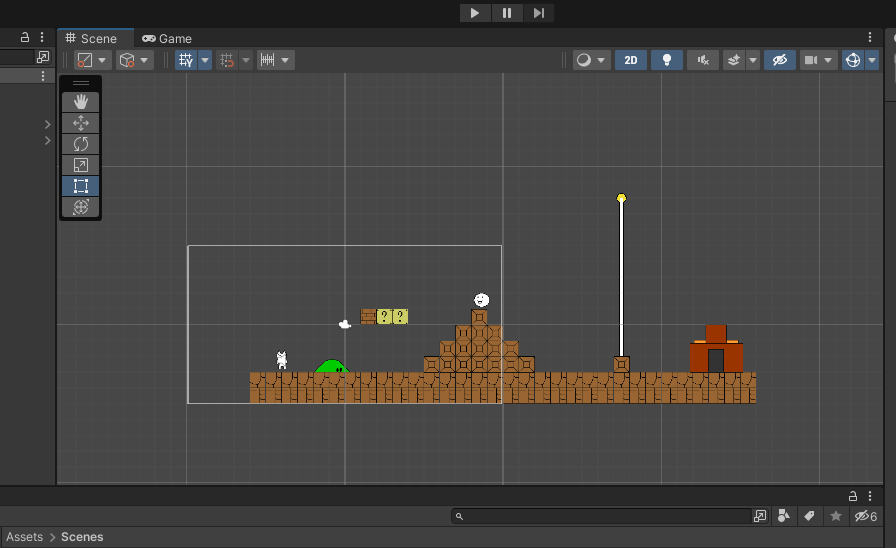
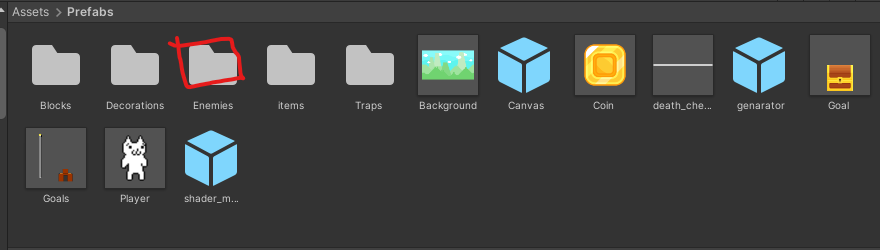
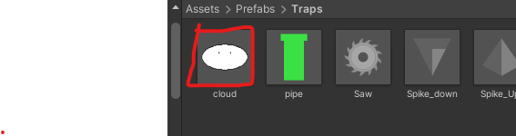

Unityでサンプルプロジェクトを起動していただけたと思います。
sampleという名前のファイルをダブルクリックしてください


すると、なんか見覚えがありそうなステージが出てきます。
じゃあ、遊んでみましょう。 操作はAで左、Dで右に移動、スペースでジャンプです。
なんかてきっぽいやつがいますが、なんか変ですよね。 こいつを直しましょう。いったん止めます。
「Prefab」というフォルダを開きます

そして、「Enemy」というフォルダをダブルクリックで開きます。

では、好きな敵を選んで、ドラッグ&ドロップでシーンの上においてください。（マウスを押し込んで、そのままシーンの上まで動かし、そこでマウスを離す）

そして、さっきのおかしかった敵を消します。 おかしい敵をクリックして、
 「Delete」キーを押してください。(Back spaceは消えないので注意)
「Delete」キーを押してください。(Back spaceは消えないので注意)

では、もう一度先ほどの手順で遊んでみましょう
ここからは、あなたはあなただけのステージを作ってみましょう。
先ほどの「Prefab」というフォルダの中の、 Decorations、Enemies、Items、Trapsのフォルダをダブルクリックして、自分の好きなものを探して、ステージの上に設置してみましょう。

自分だけのステージを創ってみましょう。そして、仲間とも共有してみましょう。
今までは、まるでマリオメーカーみたいな感じですけど、ちょっと発展したことをしみます。 それは、アイテムとアイテムを関連させることです。


この土管っぽいアイテムをドラッグ&ドロップで設置してください。
ここで、２つ土管を設置します。
そして、一つ目の土管の上の部分をダブルクリックして、Inspectorのウィンドウを開いてください。

すると、右側にこんなのが出てくる

少し下にスライドして

Can_warpという項目があるので、チェックを入れます。
そして


「pipe(1)」という項目を選択します
これで、一つ目の土管が二つ目の土管にワープするようになります。
実際に遊んで試してみてください。
これと同様のことが、warpでもできます。
このWarpの使用は、どのオブジェクトにも移動できるので、pipeやwarpやそれ以外でも、なんでもペアに設定してみてください
あと、 この雲も試してみてください。 先ほどと同様に、ドラッグアンドドロップで設置して、設置された雲をクリックして、

can_killにチェックを入れてください。
そして、遊んでみてください。雲にプレイヤーが触れるとどうなるでしょうか？
今回、ゲーム開発の一番楽しい部分を体験してみました。